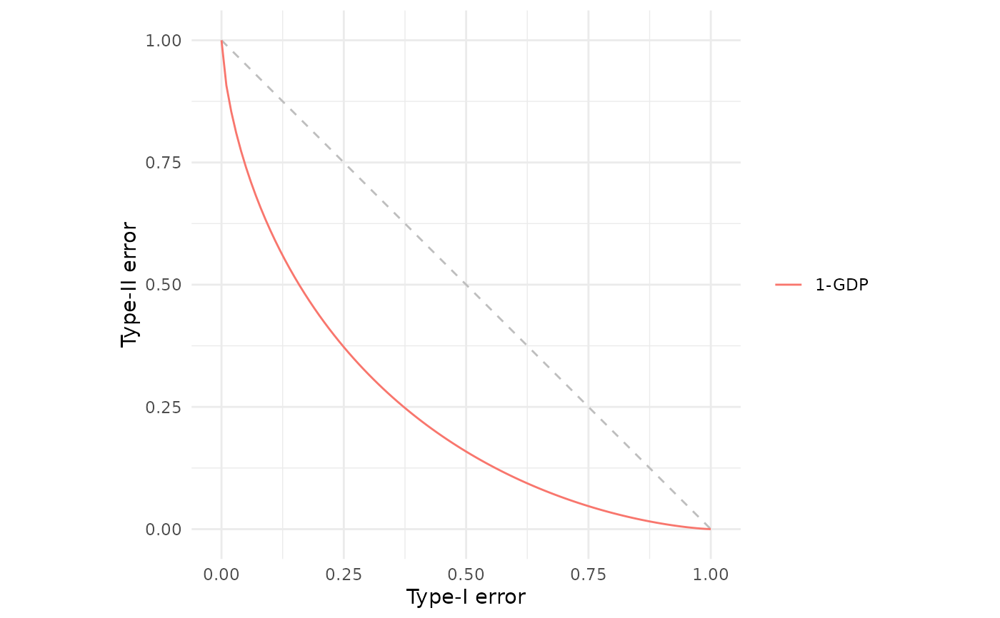
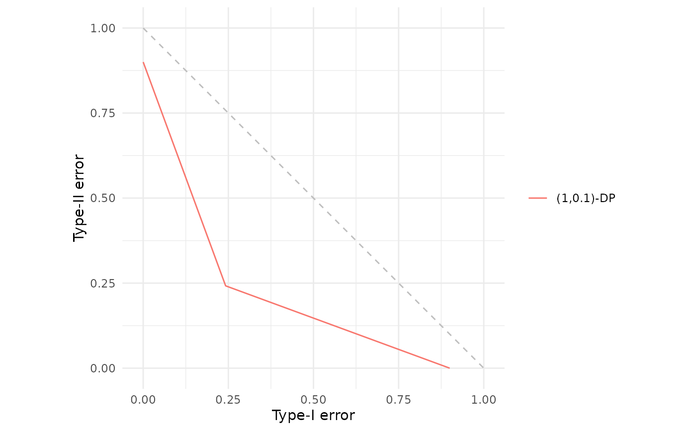
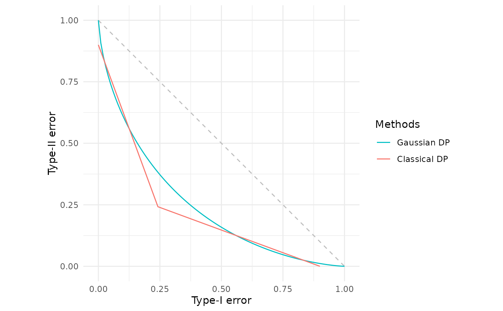
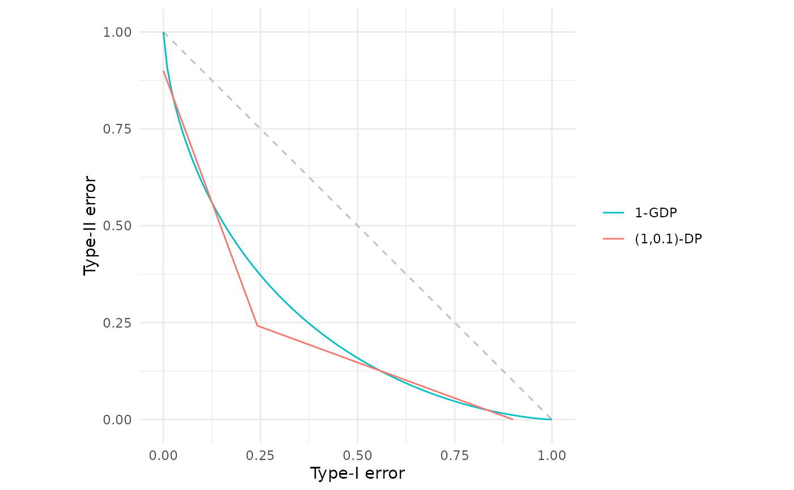
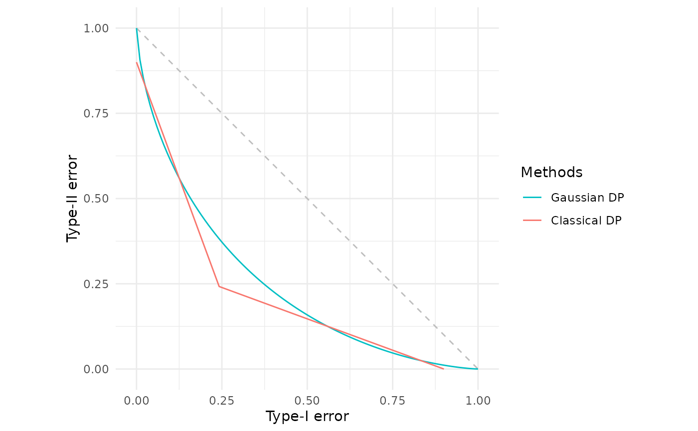
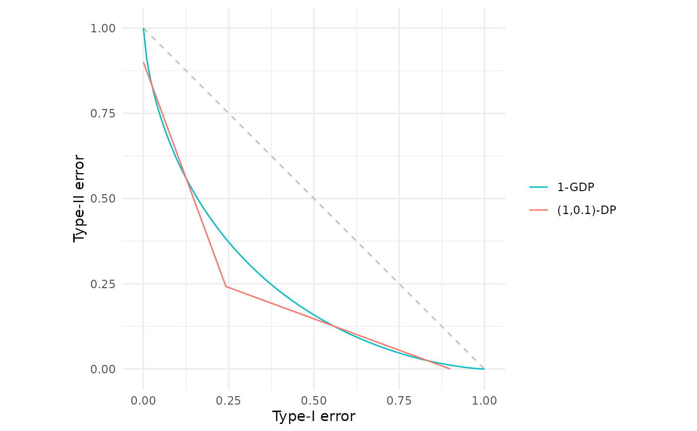

Produce a comparative plot of one or more (analytic or empirical) f-differential privacy trade-off functions.
Usage
fdp(..., .legend = NULL, .tol = sqrt(.Machine$double.eps))Arguments
- ...
One or more f-DP trade-off specifications. Each argument can be a:
function (user-defined or built-in, e.g.
gdp(),epsdelta(),lap(), etc) that when called with a numeric vectoralphareturns a data frame with columnsalphaandbeta;data frame with columns
alphaandbeta;numeric vector of length equal to the internal alpha grid (interpreted as
beta).
Arguments may be named to control legend labels. See Details for full explanation of different ways to pass these arguments.
- .legend
Character string giving the legend title. Use
NULL(default) for no title.- .tol
Numeric tolerance used when:
Validating \(\beta\),
beta <= 1 - alpha + .tol.Checking convexity for objects forced to draw as lines.
Value
A ggplot2 object of class c("fdp_plot", "gg", "ggplot") displaying the supplied trade-off functions (and points, if applicable).
It can be further modified with additional ggplot2 layers or combined with other fdp_plot objects using +.
Details
This is the main plotting function in the package, which produces plots of f-differential privacy (f-DP) trade-off functions in the style shown in the original f-DP paper (Dong et al., 2022). If you would like a reminder of the formal definition of f-DP, please see further down this documentation page in the "Formal definition" Section.
The ... arguments define the trade-off functions to be plotted and can be:
Built-in analytic trade-off function generators such as
gdp(),epsdelta(),lap().User-defined functions defining trade-off functions.
Data frames containing an
alphaandbetacolumn.Numeric vectors interpreted as a sequence of
betavalues over a canonical grid of Type-I error ratesalpha = seq(0, 1, by = 0.01).
We cover each of these cases in more detail in the subsequent sub-sections. After that is a discussion of the two main approaches to modifying the legend labels.
Built-in analytic trade-off function generators
Most built-in trade-off function generators will take one or more arguments specifying the level of differential privacy, for example, gdp(0.5) corresponding to \(\mu=0.5\)-Gaussian differential privacy.
These function calls can be passed directly, eg fdp(gdp(0.5)), and will automatically provide suitable legend names in the plot, including the detail of any argument specification.
So the example fdp(gdp(0.5)) results in a legend label "0.5-GDP".
User-defined trade-off functions
Custom trade-off functions should accept a vector of Type-I error values, \(\alpha\), and return the corresponding vector of Type-II error values, \(\beta\). In the simplest case, the user defined function will accept a single argument, so in the (unrealistic) perfect privacy setting:
my_fdp <- function(a) {
1 - a
}This can then be plotted by calling fdp(my_fdp).
However, often there will be a need to pass additional arguments. This is supported using the direct calling mechanism, so assume an axis offset is required for the above unrealistic example:
my_fdp <- function(a, off) {
pmax(0, 1 - a - off)
}This is now called by using the dummy variable alpha (which need not be defined in your calling environment), fdp(my_fdp(alpha, 0.1)), which will produce the trade-off function curve with offset 0.1.
Data frames
One need not define a trade-off function explicitly, it can be implicitly defined by giving a set of coordinates \(\{(\alpha_i, \beta_i)\}_{i=1}^n\) in a two-column data frame with columns named alpha and beta.
These coordinates will be linearly interpolated to produce the trade-off function curve.
For example
my_fdp <- data.frame(alpha = c(0, 0.25, 1), beta = c(1, 0.25, 0))Can be used to produce the f-DP curve corresponding to \(\varepsilon\approx1.09861\)-differential privacy by then calling fdp(my_fdp).
Of course, that particular example is more easily produced using the built-in analytic trade-off function generator epsdelta() by calling fdp(epsdelta(1.09861)).
Numeric vectors
Finally, it is possible to simply provide a vector of \(\beta\) values at the grid of \(\alpha\) values that fdp() uses internally for plotting — that is, at the values seq(0.0, 1.0, by = 0.01).
For example,
a <- seq(0.0, 1.0, by = 0.01)
my_fdp <- 1 - awould then produce the (unrealistic) perfect f-DP privacy curve by calling fdp(my_fdp).
Legend labels
As discussed above, built-in analytic trade-off function generators will provide automatic legend labels that make sense for their particular trade-off function.
In all other cases, the default will be for the legend label to equal the function, data frame, or numeric vector variable name used when calling fdp().
Thus, in all the examples above where my_fdp was used as the name of the function/data frame/vector the default legend label will be simply "my_fdp".
This default can be overridden in two ways:
by using an argument name. For example, to set the legend label to "hello" in the user-defined function with offset, one would call
fdp(hello = my_fdp(alpha, 0.1)). This also works with spaces or special characters by using backtick quoted argument names, for examplefdp(`So cool!` = my_fdp(alpha, 0.1)).by modifying the object passed with
fdp_name()in advance. See the help file for that function for further details.
Drawing method and validation
By default, built-in and user-defined function arguments will be plotted as a trade-off function curve.
This means that they will first be checked to ensure the rendered line is indeed a valid trade-off function: that is, convex, non-increasing and less than \(1-\alpha\) (however, technically continuity cannot be checked with a finite number of calls to a black-box function).
If a problem is detected an error will be thrown.
Note that due to the finite precision nature of computers, it might be that these validity checks throw a false alarm, in which case you may use the .tol argument to increase the tolerance within which these validity checks must pass.
In contrast, data frame/vector arguments are plotted differently depending on their size. If there are at least 100 rows/elements then these will be treated in the same way as built-in and user-defined function arguments, with trade-off function validity checks. However, if there are fewer rows/elements, then these will be treated as merely a collection of points, the only check being that they all lie below the \(\beta = 1-\alpha\) line. Those points will then be plotted, together with the lower convex hull which corresponds to the lower bounding trade-off function for that collection of points.
This default behaviour of validating and drawing a line versus computing lower convex hull and plotting points can be controlled with the fdp_point() and fdp_line() functions.
See those help files for further details.
A final performance note: all function type arguments are evaluated on a uniform grid alpha = seq(0, 1, 0.01).
To use a custom resolution, supply an explicit data frame instead of a function.
Formal definition (Dong et al., 2022)
For any two probability distributions \(P\) and \(Q\) on the same space, the trade-off function $$T(P,Q) \colon [0,1] \to [0,1]$$ characterises the optimal relationship between Type I and Type II errors in a hypothesis test distinguishing between them. It is defined as: $$T(P, Q)(\alpha) = \inf \left\{ \beta_\phi \colon \alpha_\phi \leq \alpha \right\}$$ where the infimum is taken over all measurable rejection rules \(\phi\). The terms \(\alpha_\phi = \mathbb{E}_P[\phi]\) and \(\beta_\phi = 1 - \mathbb{E}_Q[\phi]\) represent the Type I and Type II errors, respectively.
A function \(f \colon [0,1] \to [0,1]\) is a trade-off function if and only if it is convex, continuous, non-increasing, and satisfies \(f(x) \le 1-x\) for all \(x \in [0,1]\).
In the context of differential privacy, we are interested in the distributions of the output of a randomised algorithm when run on two neighbouring datasets (datasets that differ in a single record), \(S\) and \(S'\). Let \(M\) be a randomised algorithm which has output probability distribution denoted \(M(S)\) when applied to dataset \(S\). Then, each pair of neighbouring datasets generate a specific trade-off function \(T(M(S), M(S'))\) which characterises how hard it is to distinguish between whether dataset \(S\) or \(S'\) has been used to produce the released output. Considering all possible neighbouring datasets leads to a family of trade-off functions, the lower bound of which determines the privacy of the randomised algorithm.
More formally, let \(f\) be a trade-off function. A randomised algorithm \(M\) is said to be \(f\)-differentially private (f-DP) if for any pair of neighbouring datasets \(S\) and \(S'\), the following condition holds: $$T(M(S), M(S')) \ge f$$ This definition means that the task of distinguishing whether the mechanism was run on dataset \(S\) or its neighbour \(S'\) is at least as difficult as distinguishing between two canonical distributions whose trade-off function is \(f\).
Therefore, this function is concerned with plotting \(T(P,Q) \colon [0,1] \to [0,1]\) or \(f \colon [0,1] \to [0,1]\). That is, plotting a function which returns the smallest type-II error for a specified type-I error rate.
References
Andrew, A. M. (1979). “Another efficient algorithm for convex hulls in two dimensions”. Information Processing Letters, 9(5), 216–219. doi:10.1016/0020-0190(79)90072-3 .
Dong, J., Roth, A. and Su, W.J. (2022). “Gaussian Differential Privacy”. Journal of the Royal Statistical Society Series B, 84(1), 3–37. doi:10.1111/rssb.12454 .
Examples
# Plotting mu=1 Gaussian differential privacy
fdp(gdp(1))

# Plotting the f_(epsilon,delta) curve corresponding to (1, 0.1)-differential privacy
fdp(epsdelta(1, 0.1))

# These can be plotted together for comparison
fdp(gdp(1), epsdelta(1, 0.1))
 # The same curves custom labels and a custom legend header
fdp("Gaussian DP" = gdp(1),
"Classical DP" = epsdelta(1, 0.1),
.legend = "Methods")

# Alternatively, combine separate fdp() calls using +
fdp(gdp(1)) + fdp(epsdelta(1, 0.1))

# The same curves custom labels and a custom legend header
fdp("Gaussian DP" = gdp(1),
"Classical DP" = epsdelta(1, 0.1),
.legend = "Methods")

# Alternatively, combine separate fdp() calls using +
fdp(gdp(1)) + fdp(epsdelta(1, 0.1))
